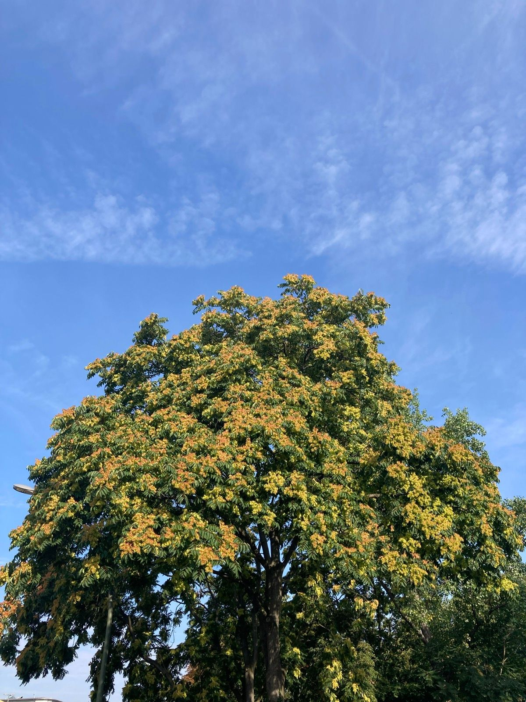

This article was originally posted on my Running Log Newsletter on Substack. You can also read it here.
As we are trapped between the years, I took some time to reflect on my practice of running. This post is an attempt to better understand myself, and share my learning.

I’m an average runner at best. There is no doubt about it. However, I start every run with a little curiosity to discover something new about myself. At the very least, I intend to simply observe the subtle differences within me from the previous run. Every time I put on my shoes, I’m ready to be the best average runner I could possibly be. This belief is all that matters to me.
My relationship with running has matured a bit this past year. I feel more comfortable about accepting my limited abilities. Last year, things were a bit too overwhelming. This year was more about drawing a tiny bit of wisdom from all the knowledge I gained from running, and reading. At every starting line, I hoped that somewhere down the road, the pain makes way for some other thing, possibly contentment.
Running has become an integral part of my identity. My habits have adapted significantly to accommodate this aspect into my lifestyle choices. Running affords me a “fidelity” for my fitness - physical, mental, and spiritual. Unfortunately, my general fitness has not improved significantly year-to-date. My goals heading into 2023 need to be different from those that persisted me through 2022. I take this as an important learning for my evolution.
Aside: Watching Eliud Kipchoge at the Berlin Marathon was inspirational. It is one of my most cherished memories from 2022. I wrote down a report for that here.
Spring is just around the corner and I’m excited what it holds.
I look forward to many more starting lines in the upcoming year. Hope some of you will join me.
“Pain is inevitable. Suffering is optional.”